|
|||||||||||||||||||||||||||
|
|||||||||||||||||||||||||||
|
杉山進スキースクールに参加しました |
| 開 催 日 | ２００８年１月２１〜２２日 | |||
| 世 話 人 | 松澤 節夫 | |||
| 報 告 者 | 安井 康夫、岡田 尚武 | |||
| 参加者数 | ９名 （会員 ７名、会員外 ２名） | |||
| 昨年に引き続き、2008年1月21日と22日の二日間にわたって杉山進スキースクールが企画され、9名がスキーを学んできました。 例年より積雪量は少ないというものの、良いコンディションに恵まれて厳しくも楽しいスクールでした。 写真がたくさん撮れませんでしたが、いくつかご紹介します。 雪上散歩１６号、１７号もご覧ください。 |
|
■ 杉山スキー＆スノースポーツスクール |
|
■ 杉山進代表のプロフィール（2006年「雪上散歩」より） |
| 初日のゲレンデ練習 |
|
■ ９名が杉山代表から直接指導を受ける 「安全な山スキーのための練習を」との私たち中高年の要望に応えて、杉山代表がターンの仕上げを白銀の上で徹底的に講義。 |
| 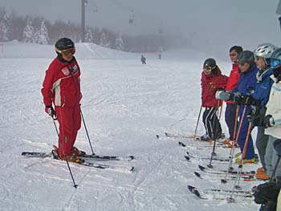 | A | 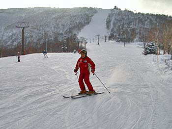 |
| さっそく奥志賀高原で基礎練習 （熱心に講義を聴くメンバーと杉山代表） | ||
| 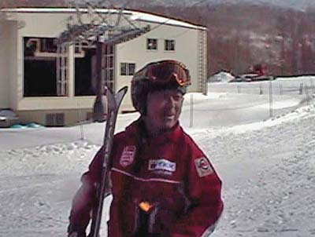 |
| ブロードバンド環境の方は、 上の写真をクリックして、ビデオをご覧下さい ホームページ掲載のため圧縮していますので、画質の悪い点は、ご容赦下さい |
| アフター・ファイブ |
|
■ アフター・ファイブは貴重な講義とワインを囲んでの座談 |
| 夕食後の講義から懐かしい写真を拝見 |
| 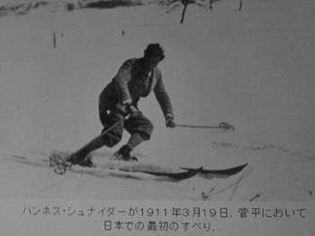 | A | 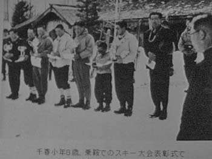 |
| 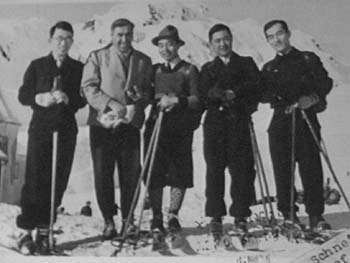 | A | 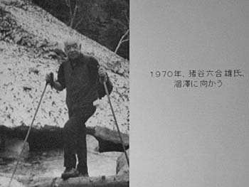 |
| ワインを片手に、杉山代表と一緒に貴重な書籍に目を通すメンバー |
| 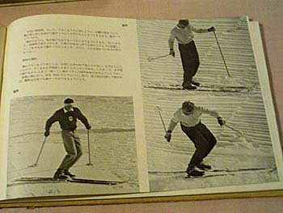 | A | 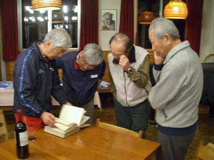 |
| 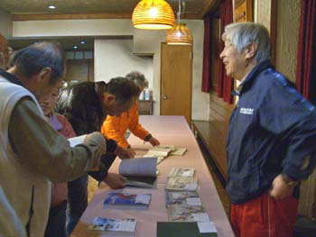 | A | 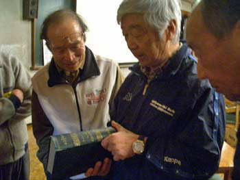 |
| 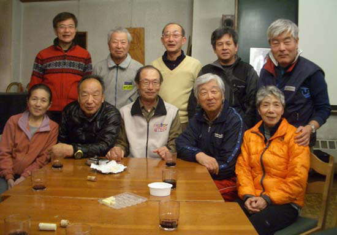 |
| 杉山代表を囲んで、ハイ チーズ！ |
| 翌日のゲレンデ練習 |
| 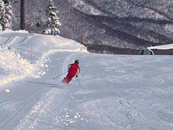 | A | 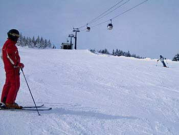 |
| 翌日も楽しく練習するメンバー | ||